Основы геоинформатики: лекция 9
21 марта 2024 г.
Пространственная статистика — анализ и моделирование пространственных явлений методами математической статистики.
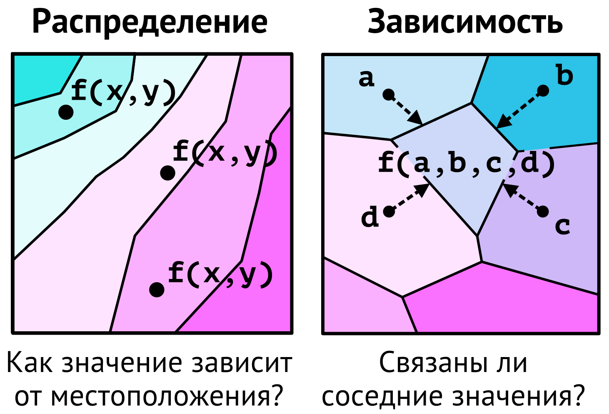
Пространственная статистика — анализ и моделирование пространственных явлений методами математической статистики.
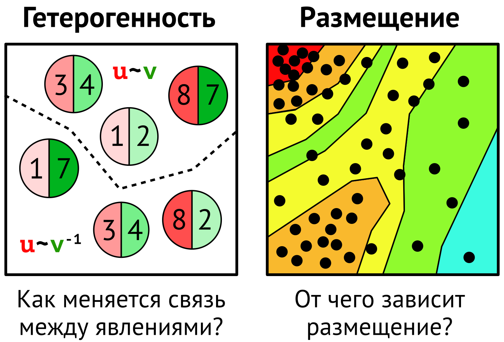
Моделирование пространственных распределений включает такие этапы как
В геостатистическом анализе исследование изменчивости даёт статистическое обоснование метода интерполяции.
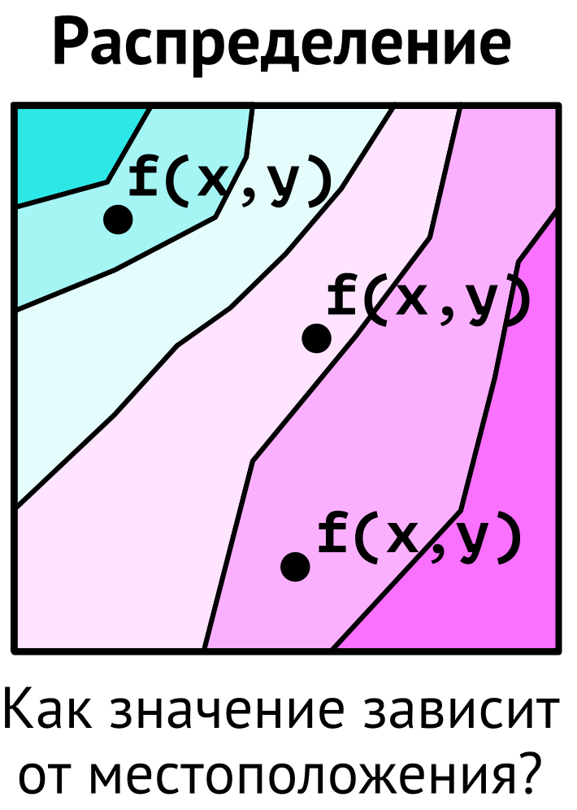
Интерполяция в общем случае — это способ нахождения промежуточных значений величины по имеющемуся дискретному набору известных значений
Методы которые производят интерполяцию на основе заданной аналитической зависимости, называют детерминистическими.
Предполагается что анализируемые данные описываются некоторой аналитической функцией \(Z(\mathbf p, \lambda)\), где \(\mathbf p\) — точка, а \(\lambda\) — набор внутренних параметров модели.
Задача: на основе известных данных \(Z_i = Z(\mathbf p_i)\), измеренных в точках \(\mathbf p_i\), и другой информации об исследуемом явлении подобрать набор параметров \(\lambda\) и построить функцию \(Z(\mathbf p, \lambda)\) для всей исследуемой области \(S\).
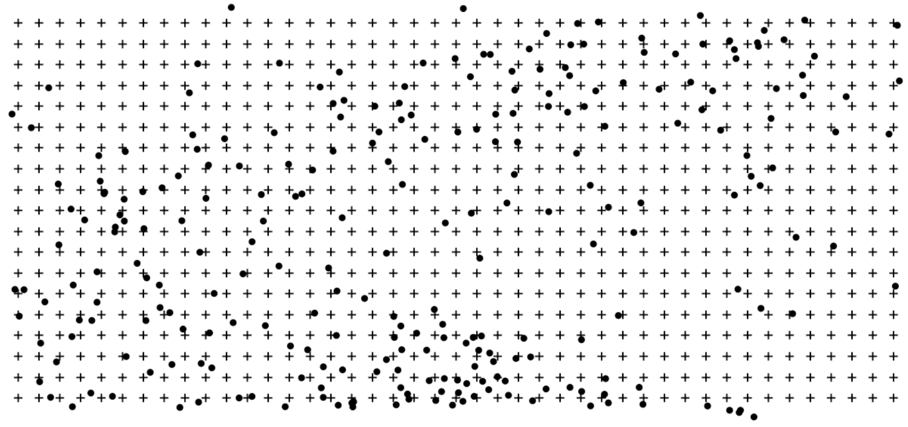
Всю область интерполяции можно разбить с помощью диаграммы Вороного на зоны принадлежности к точкам наблюдений
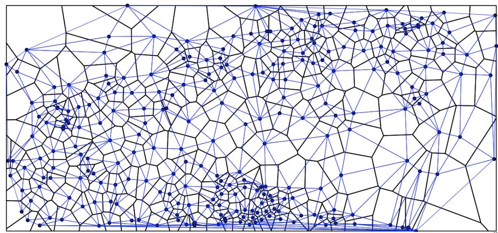
В пределах каждой ячейки значение интерполируемой величины считается постоянным
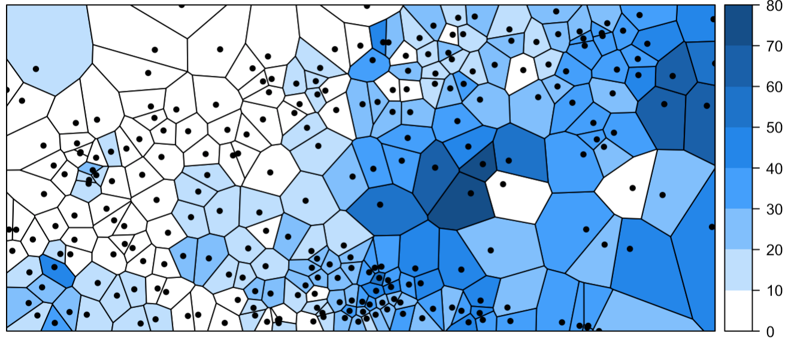
Каждый узел интерполяции получает значение, равное значению ближайшей к нему точки наблюдений
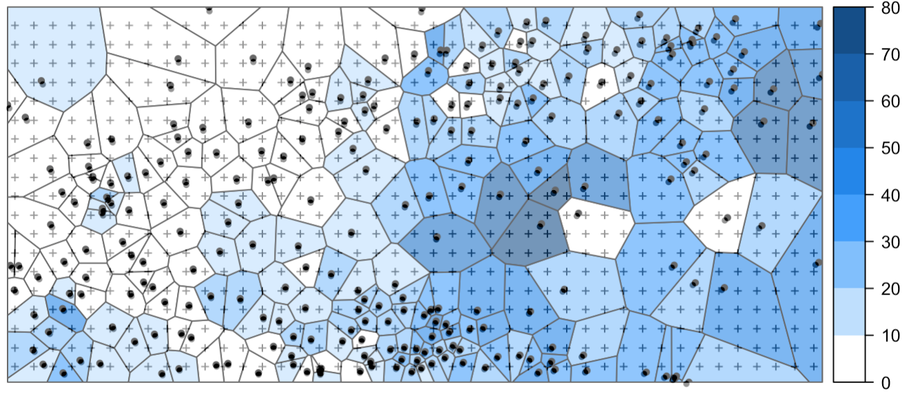
Результирующая поверхность является кусочно-постоянной
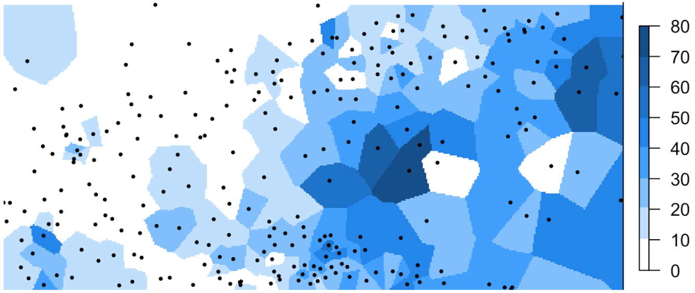
Для каждого треугольника находят уравнение плоскости:
\[Ax + By + Cz + D = 0\]
\[Z(x, y) = -\frac{1}{C}(Ax+By+D)\]
Искомые коэффициенты \(A, B, C, D\) находят решением уравнения: \[\begin{vmatrix} x - x_1 & y - y_1 & z - z_1 \\ x_2 - x_1 & y_2 - y_1 & z_2 - z_1 \\ x_3 - x_1 & y_3 - y_1 & z_3 - z_1 \end{vmatrix} = 0\]
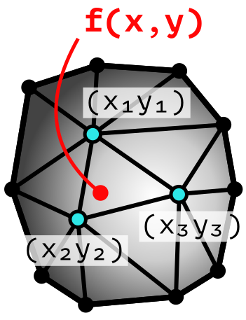
В пределах каждого треугольника — наклонный участок плоскости.
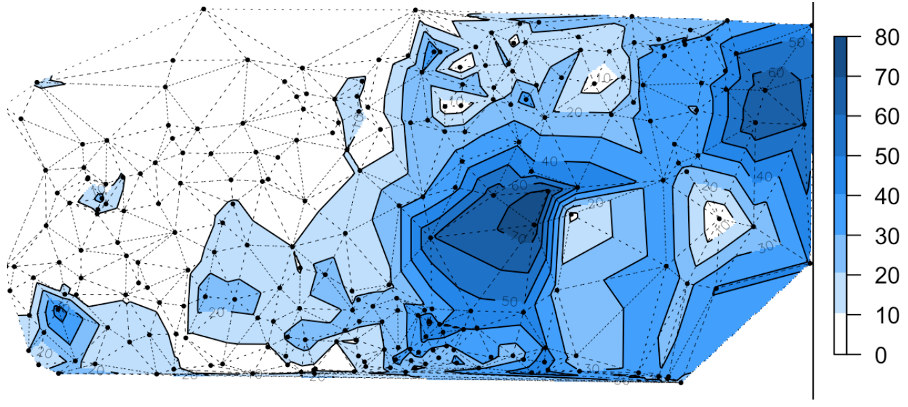
Характерная особенность — “изломы” изолиний при визуализации.
Значение показателя в произвольной точке получается как средневзвешенная сумма значений в исходных точках.
\[Z(\mathbf{p}) = \begin{cases} \dfrac{\sum_{i = 1}^{n}{ w_i(\mathbf{p}) Z_i } }{ \sum_{i = 1}^{n}{ w_i(\mathbf{p}) } }, & \text{если } w_i \neq 0 \text{ для всех } i, \\ z_i, & \text{если } w_i = 0 \text{ для одного } i, \end{cases}\]
где \(w_i(\mathbf{p}) = | \mathbf p - \mathbf p_i | ^{-\beta}\) — весовая функция, \(n\) — общее количество точек с исходными данными.
\(\beta = 2\)
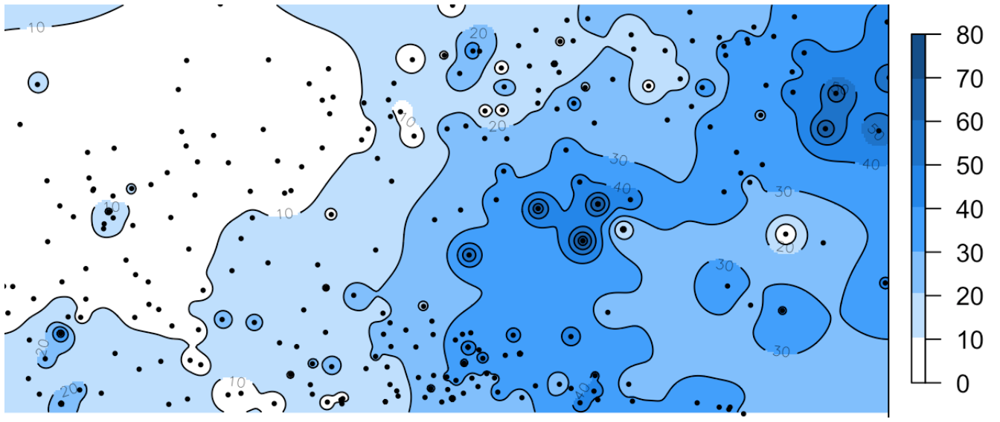
\(\beta = 3\)
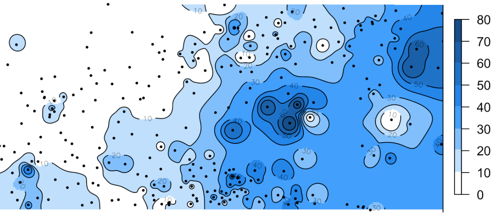
\(\beta = 4\)
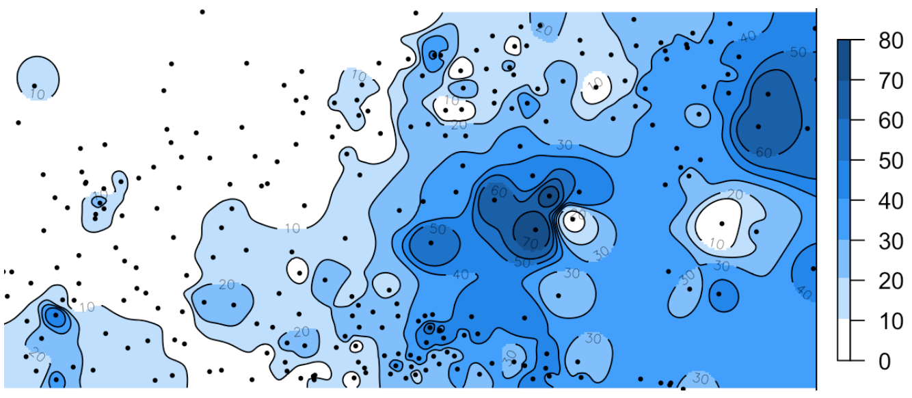
\(\beta = 5\)
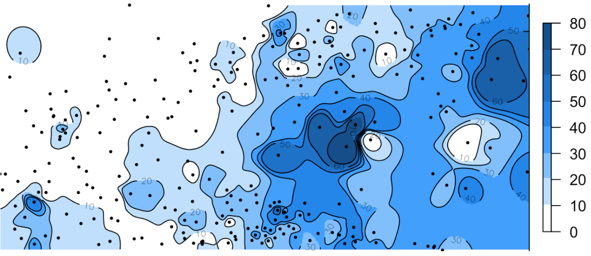
\(\beta \rightarrow \infty\)
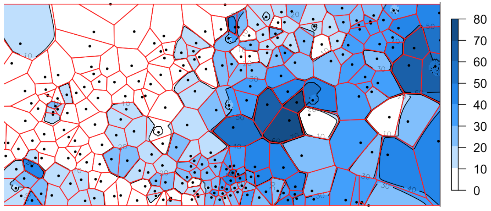
В предельном случае ОВР вырождается в ближайшего соседа.
Характерной особенностью метода является эффект “бычьих глаз”. При визуализации образуется множество замкнутых изолиний.
Причина
В каждой точке исходных данных существует локальный минимум или максимум.
Радиальной называется функция, значение которой зависит только от расстояния между \(\textbf{p}\) и некой точкой \(\textbf{c}\):
\[\phi(\textbf{p}, \textbf{c}) = \phi\big(\lVert \textbf{p} - \textbf{c}\rVert\big)\] Интерполируемое значение находится как сумма значений функций с коэффициентами \(\lambda_i\):
\[Z(\textbf{p}) = \sum_{i=1}^n \lambda_i \phi\big(\lVert \textbf{p} - \textbf{p}_i\rVert\big)\]
\(\lambda_i\) находятся путем решения системы уравнений \(Z(p_i) = Z_i\);
Особенность
В отличие от метода ОВР весовые коэффициенты не зависят от \(\mathbf{p}\).
Метод РБФ является одним из самых гибких благодаря широким возможностям выбора радиальной функции:
Мультиквадрики: \(\phi(r) = \sqrt{r^2 + \delta^2}\)
Обратные мультиквадрики: \(\phi(r) = 1 / \sqrt{r^2 + \delta^2}\)
Мульти-логарифмическая: \(\phi(r) = \ln(r^2 + \delta^2)\)
Сплайны минимальной кривизны: \(\phi(r) = r^2 \ln(r^2 + \delta^2)\)
Параметр \(\delta\) влияет на форму РБФ вблизи нулевых расстояний.
Внимание
Поверхность проходит через исходные точки, но может выходить за пределы исходного диапазона значений.
Сплайн минимальной кривизны дает поверхность, обладающую максимально низкой кривизной между исходными точками.
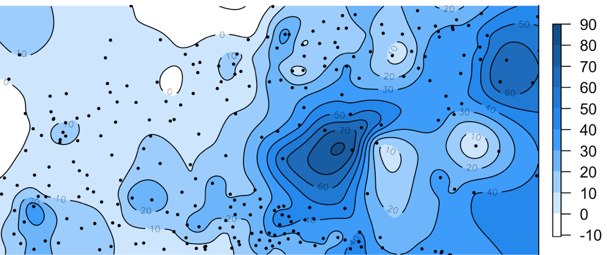
Используется для глобальной аппроксимации тренда
\[P_1(x, y) = a + bx + cy\] \[P_{1.5}(x, y) = a + bx + cy + dxy\] \[P_{2}(x, y) = a + bx + cy + dxy + ex^2 + fy^2\] Неизвестные коэффициенты находятся по методу наименьших квадратов решением системы линейных уравнений относительно коэффициентов \(a\), \(b\) и т.д. Минимизируется функция потери:
\[L = \sum_{i=1}^{n} \Large[Z(x_i, y_i) - P_k(x_i, y_i) \Large]^2\]
Полином степени 1
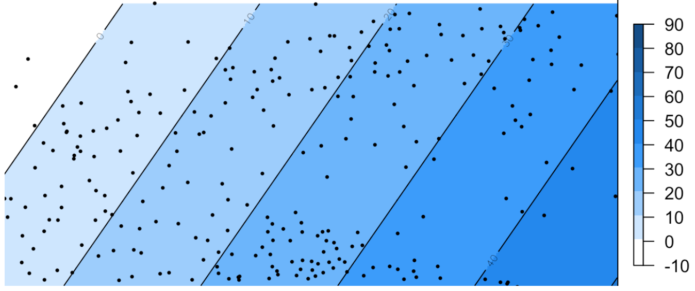
Полином степени 2
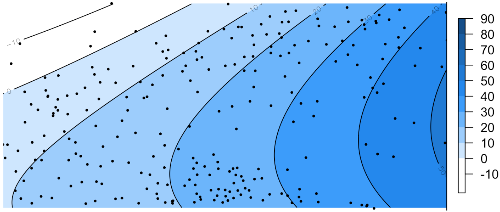
Полином степени 3
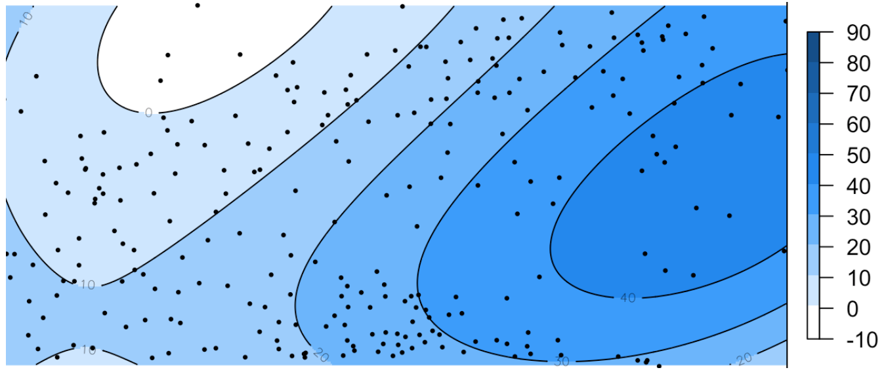
Геостатистика — раздел пространственной статистики, посвященный исследованию статистических закономерностей пространственных распределений (Matheron 1962).
Основная функция геостатистики — вариограмма:
\[ \mathbb E\big[Z(\mathbf{p}+\mathbf{h})-Z(\mathbf{p})\big]^2 = 2\gamma(\mathbf{h}), \]
где \(\mathbb E\) — математическое ожидание, \(\mathbf h\) — вектор.
Особенности
Вариограмма показывает насколько данные в точках становятся непохожими при увеличении расстояния между ними.
В изотропном случае вектор \(\mathbf h\) можно заменить на его длину \(|\mathbf h|\).
Квадрат разности значений как функция от расстояния
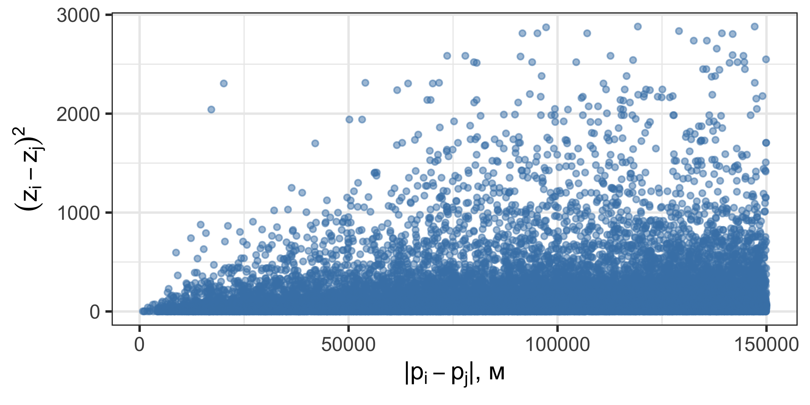
Точка на графике соответствует паре точек на местности.
Эмпирическая вариограмма рассчитывается путем разбения вариограммного облака на интервалы расстояний — лаги — и подсчета среднего значения в каждом лаге:
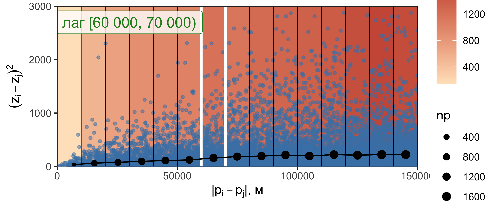
\[\widehat{\gamma} = \frac{1}{2N_h} \sum_{|\mathbf{p}_i - \mathbf{p}_j| \approx h} \big(Z_i - Z_j\big)^2\]
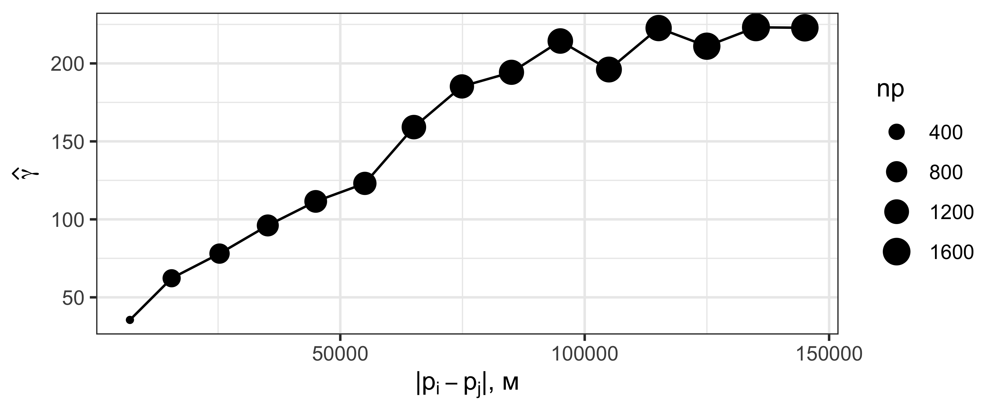
Модель вариограммы управляется тремя параметрами: эффект самородка (nugget), радиус корреляции (range) и плато (sill).
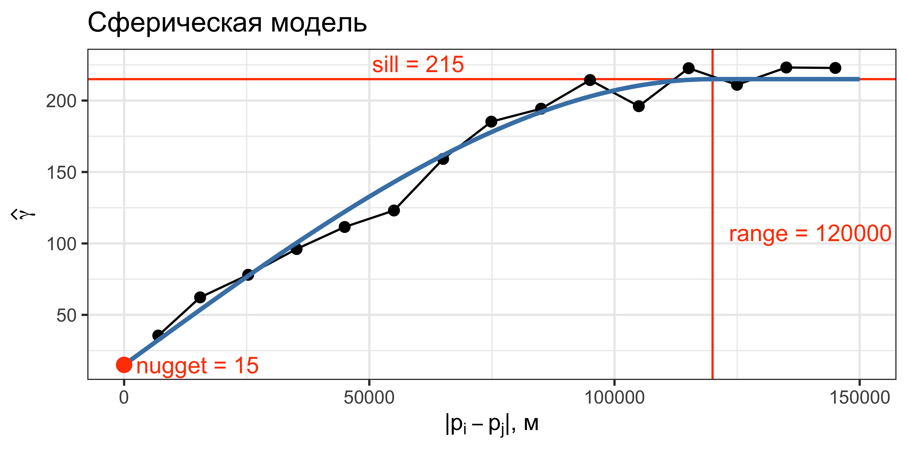
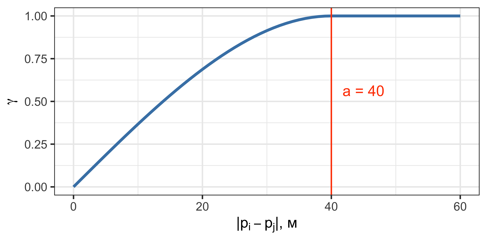
Данная модель достигает плато в точке \(h = a\).
За пределами радиуса корреляции зависимость отсутствует
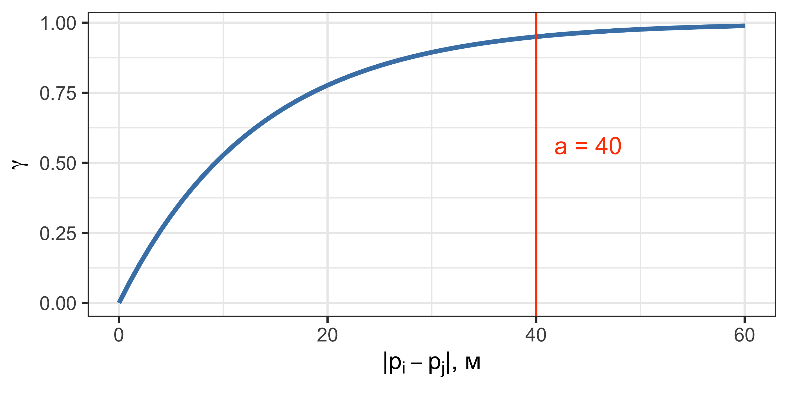
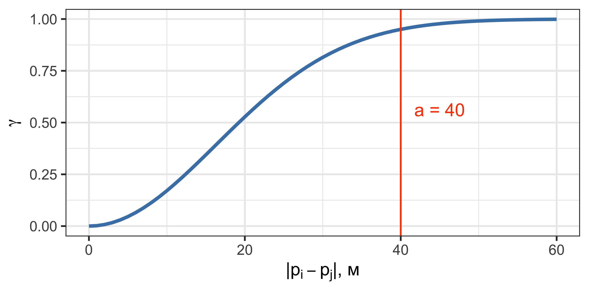
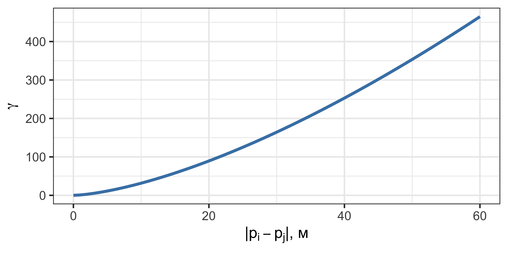
Кригинг — это геостатистический интерполятор вида (Krige 1951):
\[Z(\mathbf p_0) = \sum_{i} \lambda_i Z(\mathbf p_i) + \lambda_0\]
В случае обычного кригинга веса определяются на основе вариограммы путем решения системы линейных уравнений:
\[ \begin{cases}\sum_j \lambda_j \gamma_{ij} - \mu = \gamma_{i0},\color{gray}{~i = 1,...,N,}\\ \sum_i \lambda_i = 1 \end{cases}, \] при условии \(\lambda_0 = 0\), где \(\gamma_{ij} = \gamma(\mathbf p_i - \mathbf p_j)\), \(p_0\) — интерполируемая точка, \(\mu\) — множитель Лагранжа, возникающий из-за дополнительного условия \(\sum_i \lambda_i = 1\).
Оценка кригинга — результат интерполяции методом кригинга. По виду похожа на метод РБФ, но статистически обоснована.
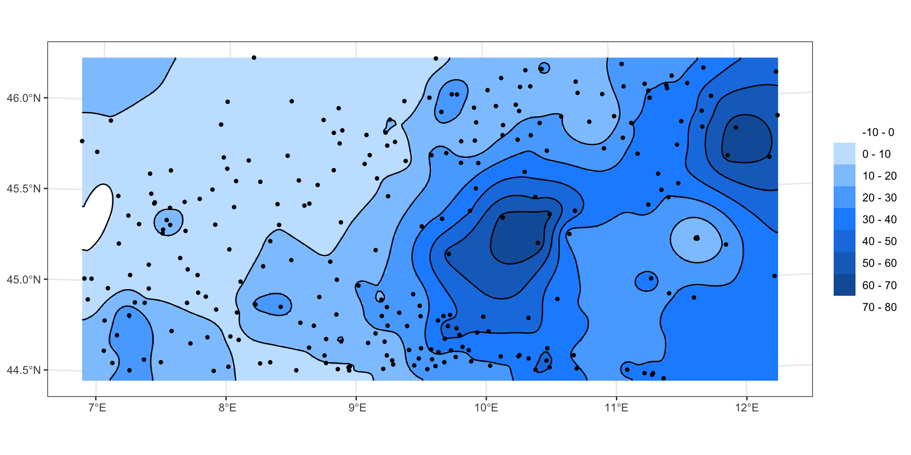
Дисперсия кригинга \(\sigma = \sum_{i}\lambda_i\gamma_{i0} - \mu\) — неопределенность оценки, которая напрямую зависит от плотности исходных данных.
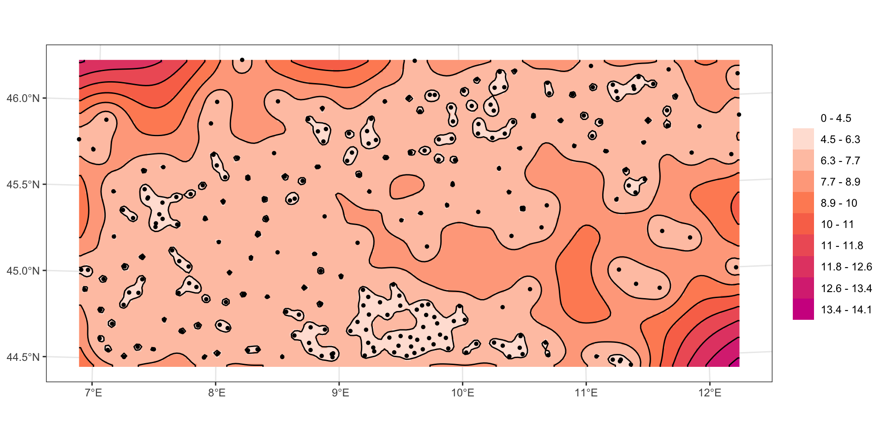
Пространственная статистика
Пространственная зависимость
Пространств. гетерогенность
Пространственная интерполяция
Ближайший сосед
Обр. взвешенные расстояния
Радиальные базисные функции
Полиномиальная регрессия
Геостатистика
Вариограмма
Кригинг
Spatial statistics
Spatial dependency
Spatial heterogeneity
Spatial inteprolation
Nearest neighbor
Inverse distance weighted
Radial basis functions
Polynomial regression
Geostatistics
Variogram
Kriging
Самсонов Т. Е. Основы геоинформатики: курс лекций